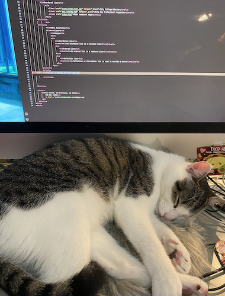

Homework 4
Table Excercise
| Lists | Usage |
|---|---|
| Unordered List | An unordered list is a bulleted List. To start this tag you use the <ul> tag |
| Ordered List | An ordered list is a numbered List where it's important to follow the steps in order. To start this tag you use the <ol> tag |
| Definition List | A definition list is also called a description list where you can for example describe a word. To start this tag you use the the <dl> tag |
Image with Caption
Definition List
- HTML
- HTML stands for Hypertext Markup Langugage.
- CSS
- CSS stands for Casscading Stylesheets.
- FTP
- FTP stands for File Transfer Protocol.
- SSH
- SSL stands for Secure Shell. SSL is used for securely transferring data between two parties.